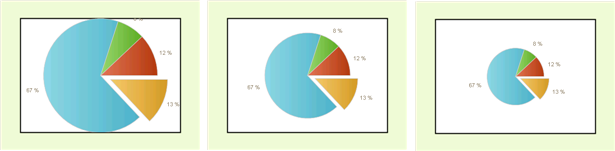

Series-Specific Properties
The following are properties specific to the series appearance of specific chart types.
Bubble
The BubbleSize property is specific to the Bubble chart type and allows you to increase or decrease bubble size without distorting the shape.
Lines and Splines
The LineSeriesAppearance______property is specific to the Line and Spline chart types. __LineSeriesAppearance has a Cap property that governs the appearance of a line terminating shape that occurs where at each data point (except the first). Valid Cap values are Flat, Square, Round, Triangle, NoAnchor, SquareAnchor, RoundAnchor, DiamondAnchor, ArrowAnchor, AnchorMask__and __Custom. LineSeriesAppearance also has sub properties for Color, PenStyle, Visible and Width.
The PointMark______is a shape that occurs at every data point, including the first. PointMarks are off by default but can be enabled using the Pointmark.Visible property. Use the Pointmark.Figure property to choose one of the predefined shapes. Other __PointMark properties include Border, Corners, Dimensions, FillStyle, RotationAngle and Shadow.
The example above shows Series 1 in red where LineSeriesAppearance properties are:
Cap = ArrowAnchor
Color = Red
PenStyle = Dash
Width = 5
Series 2 show in blue has PointMark properties set as:
Border.Color = 50, 0, 245, 100
Border.Width = 1
Figure= Star5
Visible = True
Dimensions.Height = 25px
Dimensions.Width = 25px
FillStyle.FillType = Solid
FillStyle.MainColor = 90, 100, 254, 100
Shadow.Blur = 1
Shadow.Color = DimGray
Shadow.Distance = 2
Pie
The StartAngle property specifies degrees for the rotation of a pie. The default value and the starting position is 0°. Positive values of the StartAngle property will rotate the pie clockwise and negative - counterclockwise.
The DiameterScale property controls the ratio between the size of the plot area and the diameter of the chart. It effectively sets the size of the pie. In the example below, DiameterScale is set to 1, .75 (the default) and .5.
When true, the ShowLabelConnectors property visually ties the label with the corresponding pie slice.
The ExplodePercent property defines the percentage of explosion of pie pieces. By default this is 20 percent. In the example below it is set to 50 percent: 
The __CenterXOffset______and __CenterYOffset______properties specify the distance from the center of the plot area to the center of the pie in pixels. Use these two properties to position pie charts within the plot area.